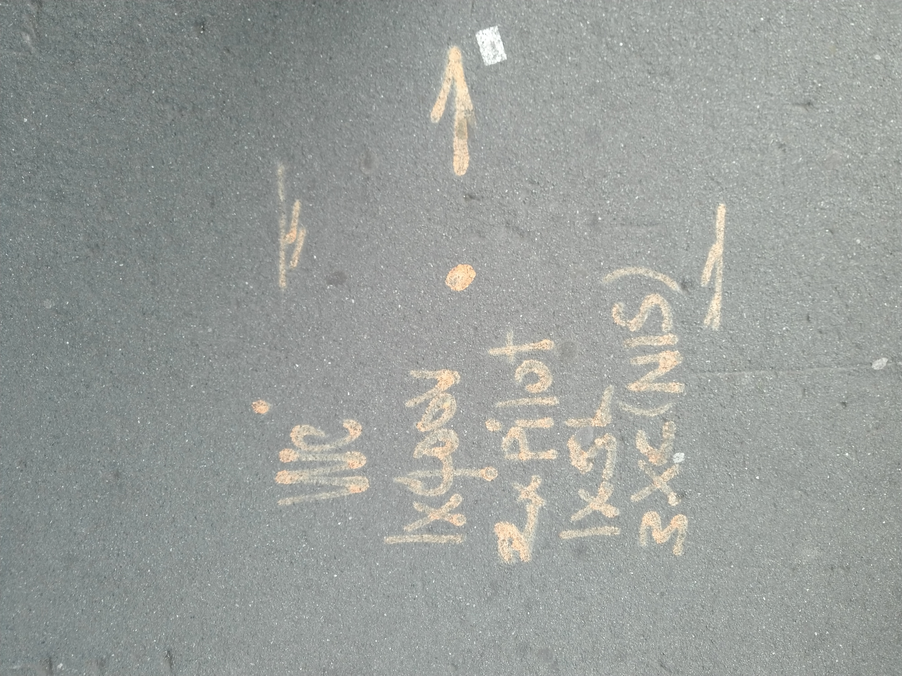
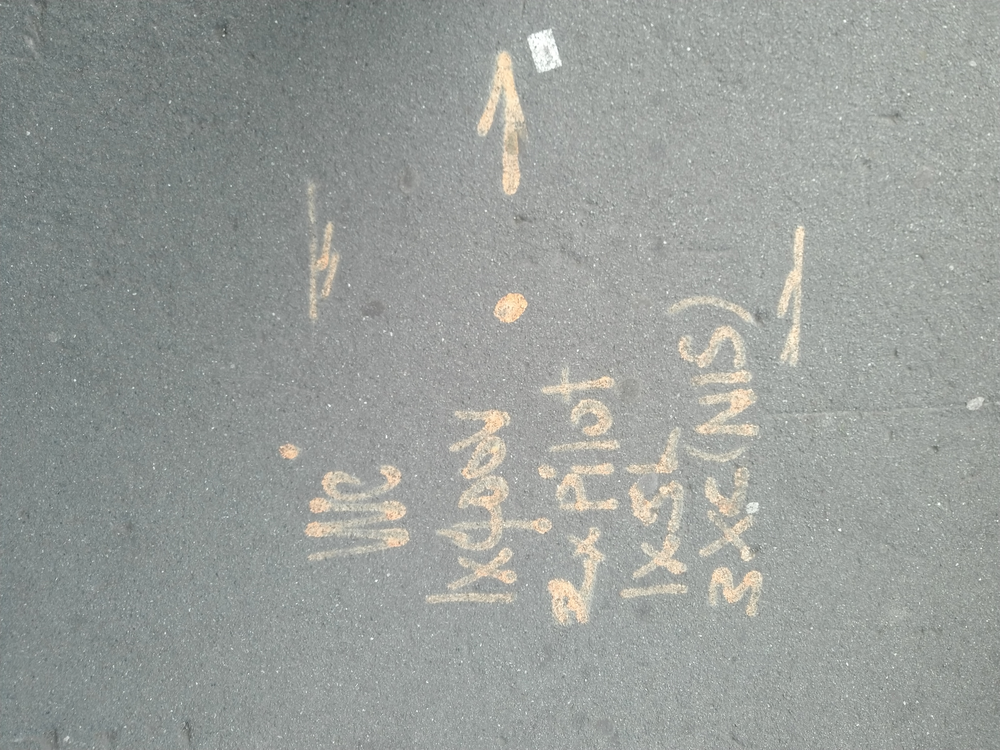

When we walk on the road we can found a lot of street marking on the road. They represent different meanings. Like the marking with orange color meaning there have cables that use for conmmunicating or contain signal lines.
Other steet marking which use orange paint.